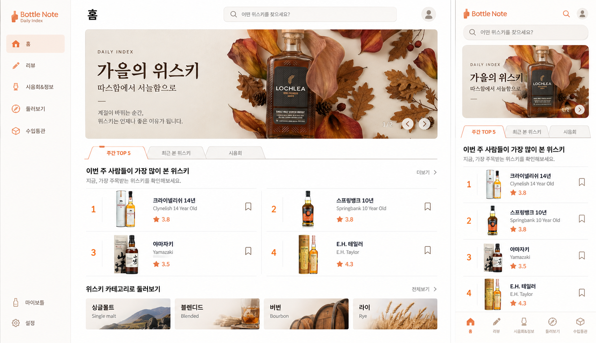
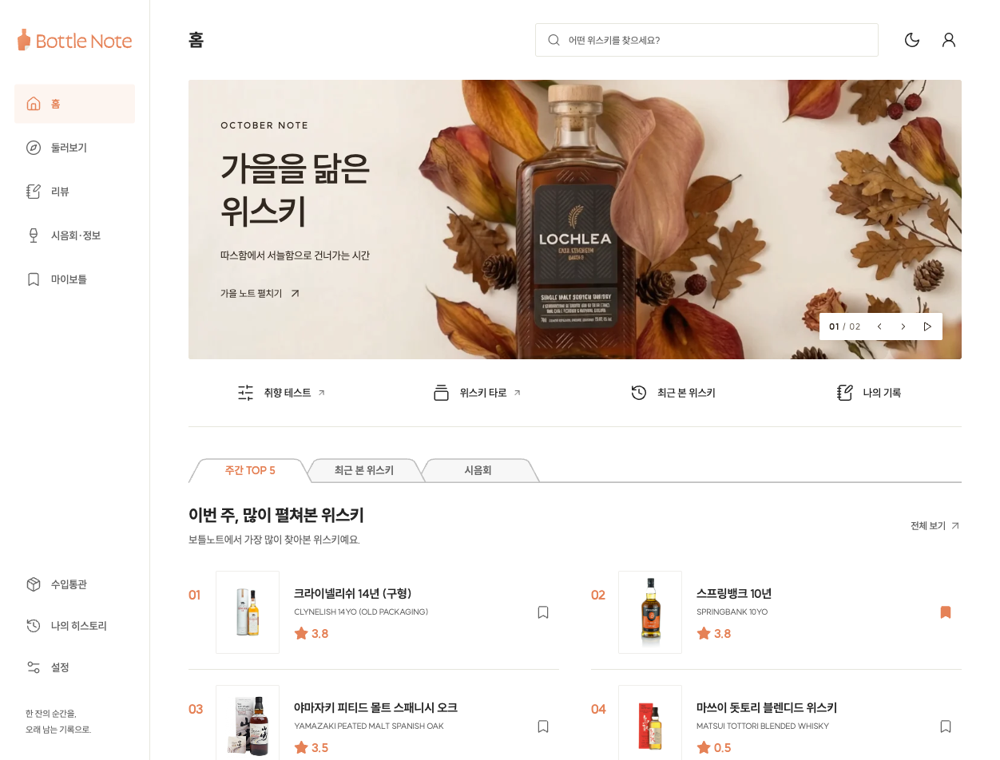
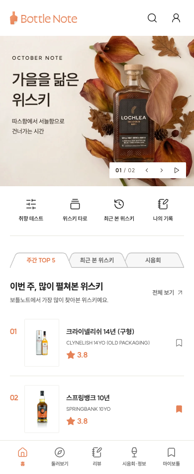

<!doctype html><html lang="ko"><meta charset="utf-8"><title>디자인 비교</title><style>body{margin:0;background:#ededeb;font-family:sans-serif}h2{padding:16px 24px;margin:0;font-size:20px}img{display:block}section{width:1652px;overflow:hidden}.renders{display:flex;align-items:flex-start;gap:10px}.renders img{flex:none}p{padding:0 24px}</style><section><h2>선택한 1안 — Daily Index (원본 1652 × 952)</h2><h2>구현 — 기능 바로 가기와 평가·기록 흐름을 반영한 리디자인</h2><div class="renders"></div></section></html>
